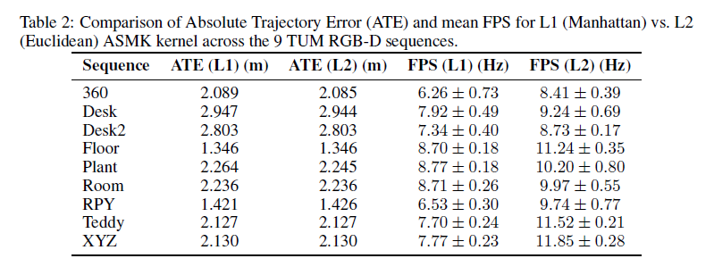

A targeted enhancement to MASt3R-SLAM's loop-closure module replaces the original Euclidean (L2) retrieval metric with a Manhattan (L1) distance, seamlessly integrating sum-of-absolute-differences into the ASMK kernel. Benchmarked across nine TUM RGB-D sequences, this modification maintains millimeter-scale parity in absolute trajectory error while revealing a 25–30% increase in runtime — underscoring both the algorithmic feasibility of L1 retrieval and the real-time performance advantages of hardware-accelerated dot-product operations.
Implementation
I implemented and benchmarked an alternative L1 (Manhattan) similarity measure within the ASMK retrieval kernel. This involved:
- Kernel Modification: Swapping the dot-product calculation for a sum-of-absolute-differences operation, while preserving descriptor normalization and aggregation logic.
- Automation Pipeline: Extending the benchmarking scripts to run both L1 and L2 variants seamlessly across nine TUM RGB-D sequences, capturing Absolute Trajectory Error (ATE) and frame-rate metrics.
- Quantitative Analysis: Developing post-processing scripts to align estimated trajectories (via Horn's method) and compute per-sequence ATE, then plotting paired accuracy vs. throughput comparisons.

Key Findings
- Accuracy Parity: Across all tested sequences, the L1-based loop-closure matched L2's ATE within millimeter-scale differences, confirming negligible impact on localization quality.
- Performance Trade-off: Despite its algorithmic simplicity, the L1 variant ran 25–30% slower than the hardware-optimized L2 implementation — highlighting the benefits of fused-multiply-add acceleration for Euclidean computations on modern CPUs.
- Practical Takeaway: While Manhattan distance can serve as a drop-in replacement when hardware constraints limit vector-dot products, Euclidean metrics remain preferable for real-time loop-closure in high-throughput robotic applications.
This project builds directly on the MASt3R-SLAM codebase, into which I integrated a Manhattan (L1) distance computation within the ASMK loop-closure kernel. I then extended the original benchmarking pipeline to execute both the native L2 and the new L1 metrics across the nine standard TUM RGB-D sequences.
More detailed report here 👉 Link